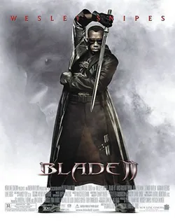

The genetics
Genetics plays a background role. The Reapers are presented as the product of a vampire lord's experiments to breed a superior race free of vampires' weaknesses, a eugenic project that fails and produces an uncontrollable plague. Damaskinos is a ruthless creator who experiments on his own son and dismisses him as a failure, and his daughter Nyssa, who dissects a Reaper to study its anatomy, turns against him when she sees how he treats his children. Blade himself is a human–vampire hybrid whose blood Damaskinos wants in order to create vampires that can walk in daylight. The Reaper condition spreads like an infectious disease, so the film mixes ideas of engineering, mutation and contagion without explaining any of them in genetic terms. It is mainly an action-horror film, and its relevance to genetics is limited to this "engineered master race" motif.
How genetics is portrayed
- Overall portrayal of genetics
- negative The film critiques the quest for a superior race through genetic manipulation: the eugenic project produces an uncontrollable plague and destroys its creator's family.
- Outcome of the genetic intervention
- negative The experiment creates Nomak and the Reaper plague, which kills vampires and humans and wipes out most of the Bloodpack; the project dies with Damaskinos.
- Eli Damaskinos and his scientists
- villain Aim: ideological, power (negative). The vampire overlord (head of the vampire nation) engineers a 'superior race' of vampires free of their weaknesses, experiments on his own son and plans to harvest Blade's blood for sunlight immunity; his own daughter calls him treacherous and his son kills him.
The story
In Prague, the half-vampire hunter Blade rescues his mentor Whistler, who had been turned into a vampire, and cures him. A pandemic is turning vampires into "Reapers", ravenous mutant creatures whose infectious bite transforms both vampires and humans, spread by the first carrier, Jared Nomak. The vampire overlord Eli Damaskinos proposes a truce, and Blade joins the Bloodpack, an elite vampire squad trained to kill him. They discover that Reapers are immune to most vampire weaknesses except ultraviolet light and destroy their nest, but most of the team die. Damaskinos then captures Blade and reveals that the Reapers are the result of his own attempts to engineer a stronger breed of vampire without its natural weaknesses; Nomak, the first Reaper, is his son, whom he regards as a failure. He plans to use Blade's blood to create vampires immune to sunlight. Blade escapes, Nomak kills his father, and Blade defeats Nomak.